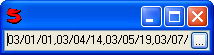
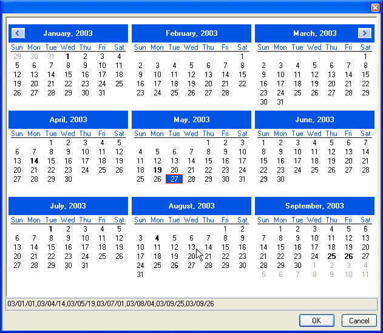

ChooseDatesControl
(mandatory = false, protectBeforeField = "")
Uses ChooseField to display a FieldControl with a choose button on the right side. The button will bring up a MonthCalDatesDialog displaying a calendar where the user can select dates.
- mandatory
- Used to force the user to enter a value in the field. The field will be marked as invalid if it is left empty and mandatory is set to true. Default is false.
- protectBeforeField
- Used to prevent the user from selecting any date that is previous to the date returned by the protectBeforeField. If no date is returned, the user may select any date. Default is "".
For example:
Window(#(ChooseDates))
Would display:

and clicking on the "..." button would display:
